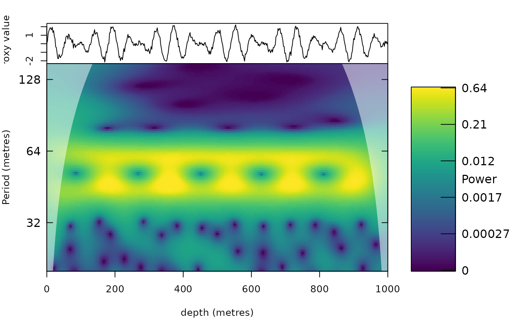
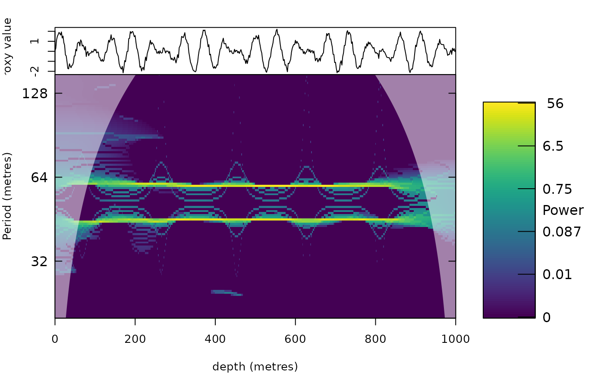

Wavelet synchrosqueezing transform
Source:R/analyse_wavelet_sst.R, R/zzz_aliases_american.R
analyse_wavelet_sst.RdComputes the continuous wavelet transform of a record and sharpens it with synchrosqueezing (Daubechies, Lu and Wu 2011; Thakur et al. 2013). A wavelet scalogram smears the energy of a cycle over neighbouring periods because the wavelet has a finite bandwidth. Synchrosqueezing estimates the instantaneous frequency of every wavelet coefficient from the phase of the transform (the time derivative of the coefficient divided by the coefficient) and moves the coefficient to that frequency. The result is a time-frequency representation in which a cycle appears as a thin ridge at its instantaneous period, so that closely spaced or slowly changing cycles are better separated than in the scalogram, and the transform stays invertible: summing the squeezed coefficients gives back the record, so a cycle can be reconstructed from a band of the squeezed transform.
The result has the same structure as the output of analyse_wavelet (class
analyze.wavelet), so it can be plotted with plot_wavelet and used by the tracking and extraction
functions (e.g. track_period_wavelet, extract_signal) in place of the scalogram.
Usage
analyse_wavelet_sst(
data = NULL,
dj = 1/100,
lowerPeriod = 2,
upperPeriod = 1024,
omega_nr = 12,
wavelet = "morlet",
wavelet_order = NULL,
threshold = "riskshrink",
sst_order = 1,
type = c("sst", "set", "reassign"),
n_iter = 1,
adaptive_window = NULL,
adaptive_on = c("sst", "cwt"),
verbose = FALSE
)
analyze_wavelet_sst(
data = NULL,
dj = 1/100,
lowerPeriod = 2,
upperPeriod = 1024,
omega_nr = 12,
wavelet = "morlet",
wavelet_order = NULL,
threshold = "riskshrink",
sst_order = 1,
type = c("sst", "set", "reassign"),
n_iter = 1,
adaptive_window = NULL,
adaptive_on = c("sst", "cwt"),
verbose = FALSE
)Arguments
- data
Input record: a matrix or data frame with depth/time in column 1 and the proxy value in column 2 (further columns are ignored). Incomplete rows are removed, the rows are sorted by depth/time, the record is linearly interpolated to the median sampling interval and standardised. Required (
Default=NULLgives an error).- dj
Spacing of the scales in octaves (numeric, > 0;
1/xgives x periods per doubling of the period, as inanalyse_wavelet); also the spacing of the squeezed period axis, so smaller values give sharper ridges at a higher computation time.Default=1/100.- lowerPeriod, upperPeriod
Shortest and longest period of the transform, in the same unit as the depth/time column of
data(numeric, 0 <lowerPeriod<upperPeriod;lowerPeriodat least twice the sampling interval). Coefficients squeezed to a period outside this range are discarded. Defaults:lowerPeriod:Default=2;upperPeriod:Default=1024.- omega_nr
Number of cycles (central angular frequency omega_0) of the Morlet wavelet, see
analyse_wavelet(numeric, > 0). Several values (e.g.c(6, 10, 16, 24)) select adaptive synchrosqueezing, seeadaptive_window. Synchrosqueezing separates cycles that are further apart than the bandwidth of the wavelet, so a larger value (10 to 12) separates close cycles better; the interference of two close cycles otherwise makes the ridges wave.Default=12.- wavelet, wavelet_order
Mother wavelet (character string or function) and its parameter(s) (numeric or
NULLfor the default parameters), seeanalyse_wavelet. Synchrosqueezing needs an analytic wavelet ofanalyse_wavelet(not the real wavelets dog, morl, hhat, poisson, haar, db, sym and battle, which give an error).wavelet:Default="morlet";wavelet_order:Default=NULL.- threshold
Coefficients with a modulus below this value are not squeezed, because the phase of a coefficient that is dominated by noise gives a meaningless frequency, and squeezing them scatters noise over the whole spectrum. Either a character string or a number (numeric, >= 0):
"riskshrink": estimates the noise level from the finest scales assqrt(2 log(N)) * 1.4826 * MAD(|W|)(Donoho and Johnstone 1994; as in the Synchrosqueezing Toolbox of Brevdo and Thakur and inssqueezepy), capped so that at least a tenth of the coefficients is kept;a number: used directly, in standard deviations of the (standardised) record, since the transform is normalised so that white noise gives the same modulus at every scale;
"none": uses a negligible value (sqrt of the machine epsilon), which squeezes everything.
Default="riskshrink".- sst_order
Order of the synchrosqueezing transform (numeric,
1or2; other values give an error).1is the classic synchrosqueezing,2the second-order synchrosqueezing transform (Oberlin, Meignen and Perrier 2015; Oberlin and Meignen 2017). The first-order estimate of the instantaneous frequency is the frequency at the centre of gravity (in time) of the part of the signal that a wavelet sees, which lags behind when the period changes quickly (a changing sedimentation rate makes the cycle a chirp). The second-order estimate measures the rate of change of the frequency (the chirp rate) from additional transforms and corrects for it, so that ridges follow fast changes of the sedimentation rate without giving up frequency resolution.Default=1.- type
Kind of transform (character), one of:
"sst": synchrosqueezing, every coefficient is moved to its instantaneous period (invertible);"set": synchroextracting transform (Yu et al. 2017), which keeps only the coefficients whose instantaneous period equals the period of their own scale (the ridge itself) and gives the thinnest ridges, at the cost of discarding the energy away from the ridge (it cannot be used to reconstruct the full signal);"reassign": reassigned scalogram (Auger and Flandrin 1995), in which the power is moved both in period and in depth/time; not invertible (the stored coefficients have zero phase).
Default="sst"(the first element ofc("sst", "set", "reassign")).- n_iter
Number of synchrosqueezing iterations (integer, >= 1); values > 1 give multisynchrosqueezing (Yu et al. 2019), in which a coefficient is moved repeatedly to the instantaneous period estimated at the period it was moved to, giving thinner ridges. Only used when
type="sst".Default=1.- adaptive_window
Length of the moving window used for adaptive synchrosqueezing, in the units of the depth/time axis (numeric, > 0). Only used when
omega_nrhas several values: the transform is computed for everyomega_nrand at every position the one with the most concentrated energy (lowest Renyi entropy of order 3 within the moving window) is used. A short wavelet is then chosen where the period changes quickly and a long wavelet where close cycles need to be separated.NULLuses three times the geometric mean oflowerPeriodandupperPeriod.Default=NULL.- adaptive_on
Transform on which the entropy of the adaptive selection is measured (character), one of
"sst", the squeezed transform, which picks short wavelets where the period changes quickly, but in very noisy records also prefers short wavelets (noise is squeezed into sparse spikes); or"cwt", the wavelet transform, which is robust against noise but nearly always prefers the longest wavelet. Only used whenomega_nrhas several values.Default="sst"(the first element ofc("sst", "cwt")).- verbose
Print the sampling interval to which the record was interpolated (logical, TRUE or FALSE).
Default=FALSE.
Value
A list of class analyze.wavelet like analyse_wavelet (Wave, Power,
Ampl, Phase, Period, Scale, coi.1, coi.2, axis.1, axis.2, ...)
for the squeezed transform, with the extra elements synchrosqueezed = TRUE, Wave_cwt and
Power_cwt (the unsqueezed transform) and inst_period (matrix with the instantaneous period of every coefficient).
Details
Every coefficient W(s, t) is moved to the period that its instantaneous frequency gives. With
the Torrence and Compo (1998) normalisation the reconstruction sum W / sqrt(s) is conserved: the squeezed
coefficients are stored such that Re(Wave) / sqrt(Scale) summed over the periods equals the same sum of
the scalogram, which is what extract_signal and related functions use. Coefficients whose instantaneous
period falls outside lowerPeriod - upperPeriod are discarded, so very strong cycles at the edge of
the range lose part of their energy there.
The ridge of a stationary cycle is sharp; for a cycle with a changing period the ridge follows the period (the instantaneous frequency). The power of the squeezed transform is not proportional to the squared amplitude of the cycle in the same way as in a scalogram, because energy is concentrated.
References
Daubechies, I., Lu, J., Wu, H.-T., 2011. Synchrosqueezed wavelet transforms: an empirical mode decomposition-like tool. Applied and Computational Harmonic Analysis 30, 243-261.
Thakur, G., Brevdo, E., Fuckar, N.S., Wu, H.-T., 2013. The synchrosqueezing algorithm for time-varying spectral analysis: robustness properties and new paleoclimate applications. Signal Processing 93, 1079-1094.
Torrence, C., Compo, G.P., 1998. A practical guide to wavelet analysis. Bulletin of the American Meteorological Society 79, 61-78.
Donoho, D.L., Johnstone, I.M., 1994. Ideal spatial adaptation by wavelet shrinkage. Biometrika 81, 425-455.
Oberlin, T., Meignen, S., Perrier, V., 2015. Second-order synchrosqueezing transform or invertible reassignment? Towards ideal time-frequency representations. IEEE Transactions on Signal Processing 63, 1335-1344.
Oberlin, T., Meignen, S., 2017. The second-order wavelet synchrosqueezing transform. 2017 IEEE International Conference on Acoustics, Speech and Signal Processing (ICASSP), 3994-3998.
Yu, G., Wang, Z., Zhao, P., 2019. Multisynchrosqueezing transform. IEEE Transactions on Industrial Electronics 66, 5441-5455.
Auger, F., Flandrin, P., 1995. Improving the readability of time-frequency and time-scale representations by the reassignment method. IEEE Transactions on Signal Processing 43, 1068-1089.
Yu, G., Yu, M., Xu, C., 2017. Synchroextracting transform. IEEE Transactions on Industrial Electronics 64, 8042-8054.
Sheu, Y.-L., Hsu, L.-Y., Chou, P.-T., Wu, H.-T., 2017. Entropy-based time-varying window width selection for nonlinear-type time-frequency analysis. International Journal of Data Science and Analytics 3, 231-245.
Examples
t <- seq(0, 1000, by = 2)
x <- sin(2 * pi * t / 45) + sin(2 * pi * t / 60) + rnorm(length(t), sd = 0.2)
cwt <- analyse_wavelet(data.frame(t, x), lowerPeriod = 20, upperPeriod = 150, dj = 1 / 40)
sst <- analyse_wavelet_sst(data.frame(t, x), lowerPeriod = 20, upperPeriod = 150, dj = 1 / 40)
op <- par(mfrow = c(1, 2))
plot_wavelet(cwt)

plot_wavelet(sst)

par(op)